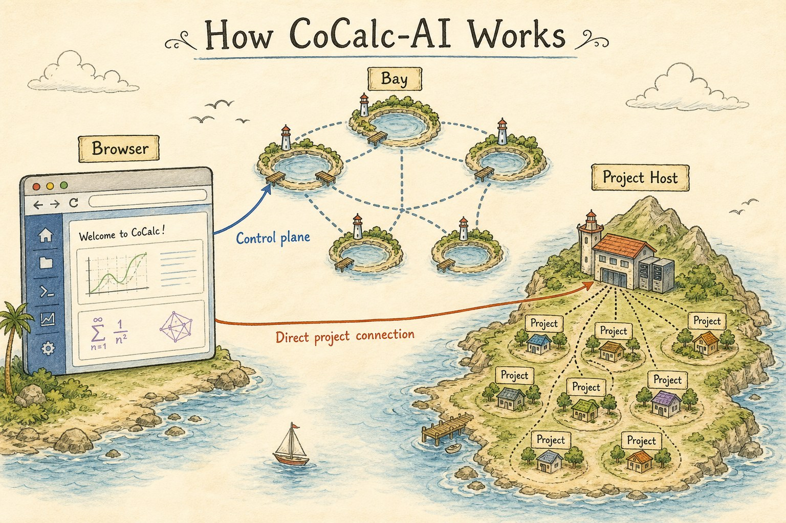
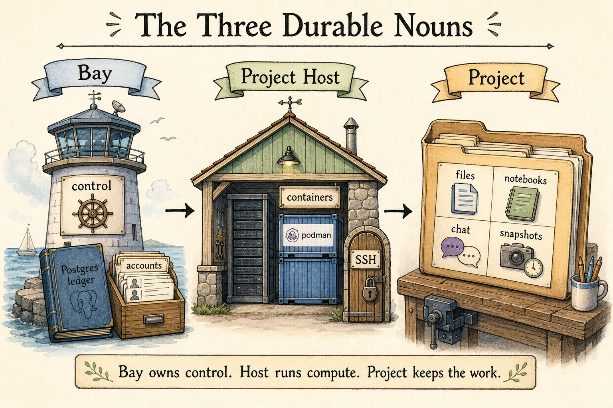
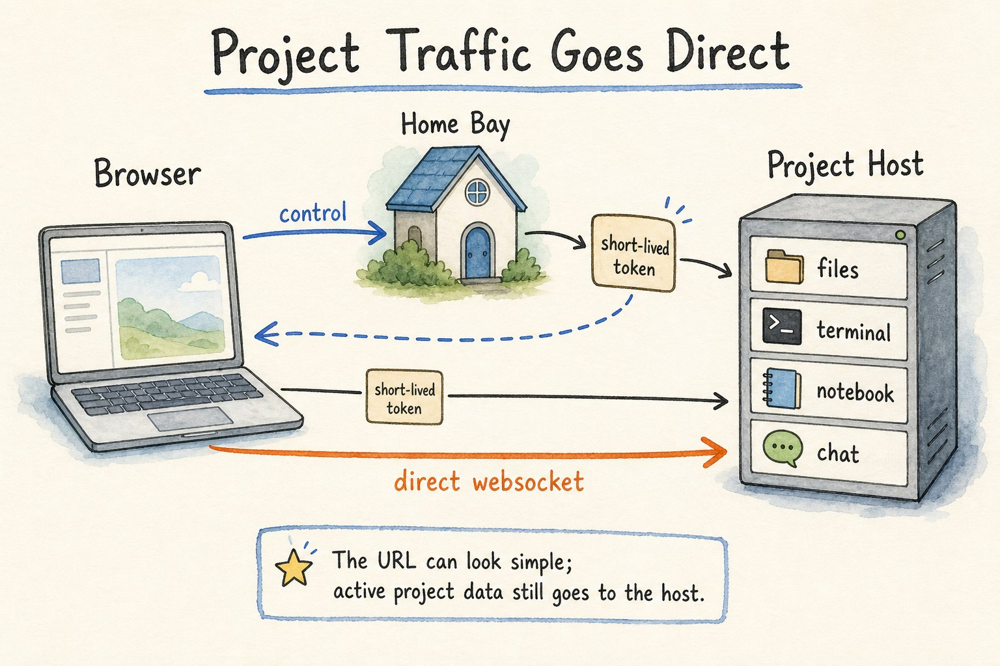
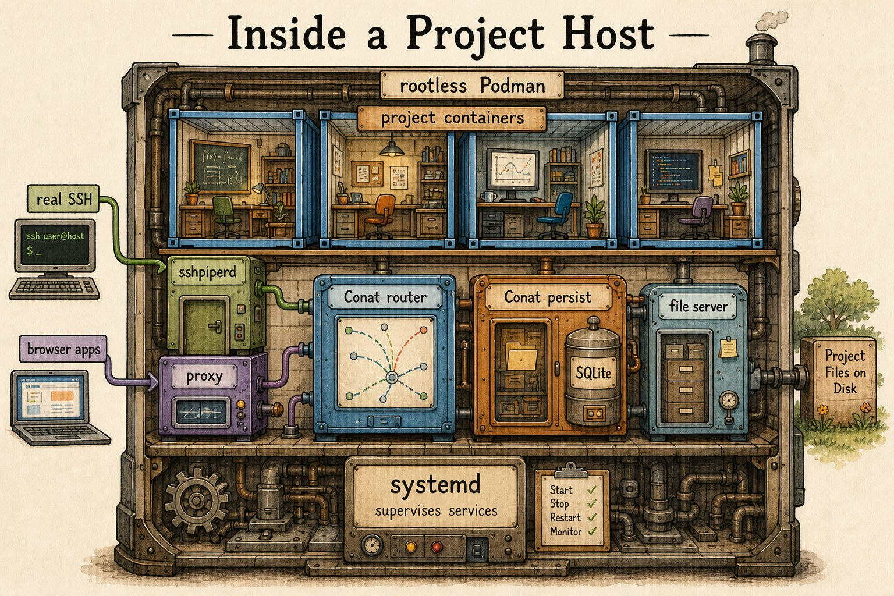
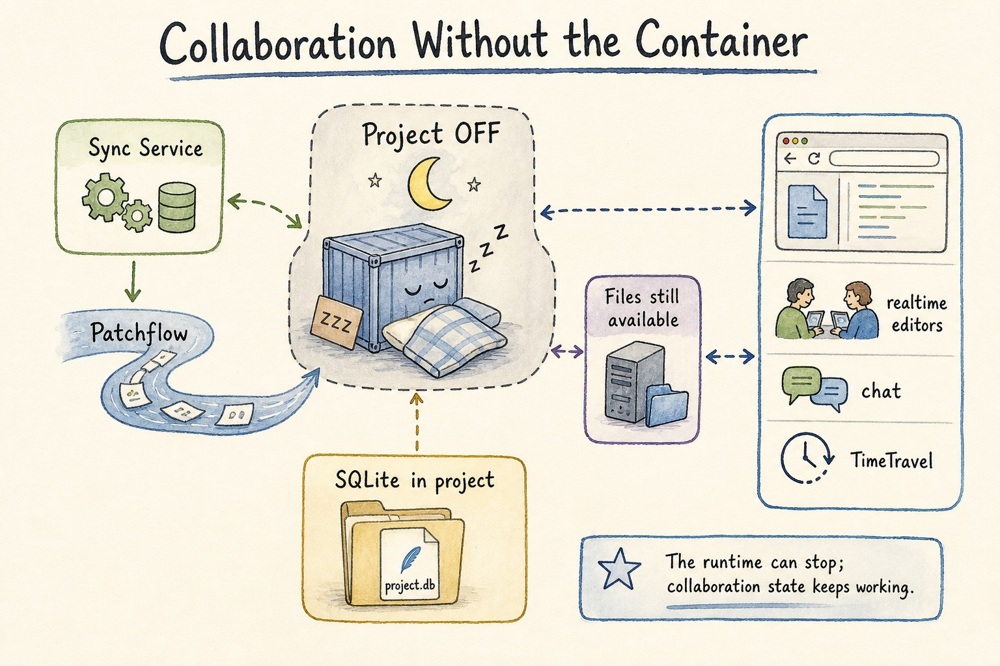
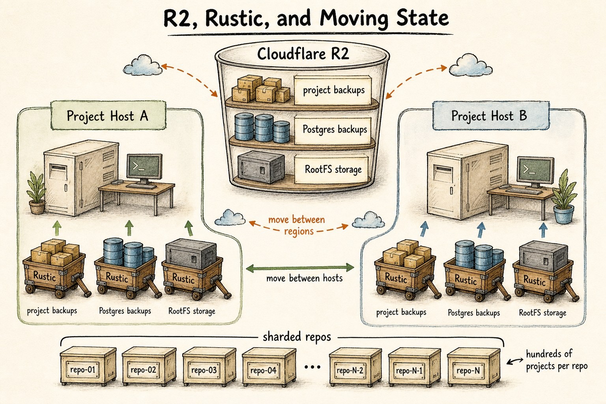
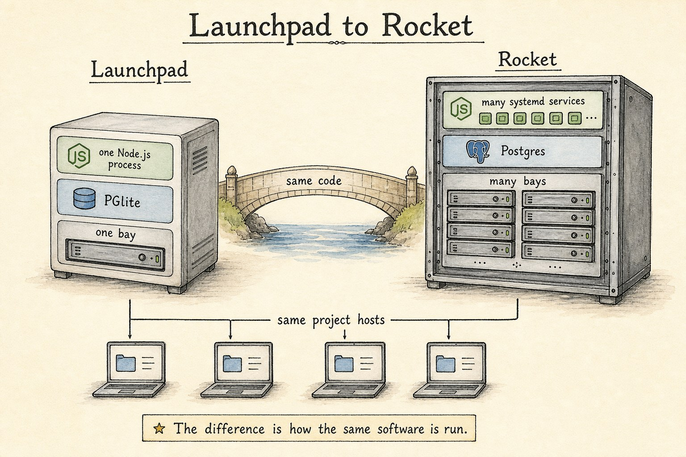

A CoCalc-AI architecture field guide
How CoCalc-AI Works
CoCalc-AI is a distributed project cloud. A bay handles account and control-plane state. A project host runs durable Linux projects. The browser talks to both, so collaboration stays responsive while compute, files, backups, and agents remain concrete and recoverable.

The easiest way to understand CoCalc is to stop picturing one large web server. CoCalc is a set of control-plane services, project-host machines, and durable project directories. The hard work is making those pieces feel like one application without forcing all traffic through one bottleneck.
This guide is not a formal reference manual. It is the mental model: where state lives, which machine does what, and why the system keeps working when projects stop, browsers refresh, hosts move, or agents run for a long time.
Start with three durable nouns
A bay is a control-plane cell. It runs Node.js services, Conat services, workers, and its own Postgres database. Accounts have a home bay. Projects have an owning bay. That gives the system an explicit answer to the question: who is authoritative for this action?
A project host is a compute/data-plane machine. It runs project containers, direct project websocket services, file services, SSH routing, app proxying, snapshots, backups, and host maintenance.
A project is the durable unit of work: files, notebooks, terminals, chat, history, snapshots, backups, RootFS choice, and agent output.

The browser uses the bay, then goes straight to the host
Account settings, project lists, membership, billing, placement, and other control-plane operations go through the user's home bay or the project's owning bay. Active project work goes to the project host.
In practice the browser obtains short-lived host-scoped credentials from the bay, then opens direct project-host websocket connections. The URL can still look simple, but the data path for notebooks, terminals, files, chat, and agent tools is close to the project.
This is why CoCalc can keep project traffic low-latency without trusting a project host to make global account decisions. Identity comes from the control plane. Project access is enforced on the host using local ACL state kept fresh from the bay.

Inside a project host
Project hosts are intentionally not Kubernetes nodes. Today they are managed Linux machines with systemd-supervised services. Projects run in locked-down rootless Podman containers, which trades some VM-style isolation for density, speed, and lower cost.
A host also runs the data-plane pieces around those containers:
Conat router and persist services, the file server, SSH routing via
sshpiperd, browser app proxying, and project lifecycle
control. Normal SSH is real SSH, including port forwarding and X11
forwarding, not a narrow web-shell imitation.
The host has its own durable local state for project placement, service metadata, snapshots, and sync helpers, while the bay remains authoritative for account and project ownership.

Collaboration is not trapped inside the container
A project runtime can be off while document and file services still work. That is a critical architectural distinction. The project is not merely the running container; it is a durable directory plus services that can read, write, sync, and serve project state.
Realtime document sync uses Patchflow, SyncDoc, and Conat streams. The files that store sync and service state are ordinary SQLite files in the project. That makes the state durable, inspectable, and included in project-level backup and movement workflows.
The result is the behavior users notice: editors, chat, TimeTravel, file access, and browser inspection can keep making sense even when compute is stopped or restarted.

R2 and Rustic are the long-term movement layer
Project hosts use local Btrfs for fast snapshots, clones, reflinks, compression, and deduplication-friendly project storage. For durable external storage, CoCalc uses Rustic repositories backed by Cloudflare R2 buckets.
R2 is not just a backup bucket. It is part of how project state moves between hosts and regions. The same storage layer is used for project backups, Postgres backups, long-term RootFS artifacts, and restore/copy workflows.
Rustic repositories are sharded. A repo may hold hundreds of projects, while a deployment can have many repos spread across buckets. That keeps backup storage operationally bounded without requiring one enormous repository.

Launchpad and Rocket are the same architecture at different sizes
Launchpad is the one-bay form of CoCalc. It is deliberately simple: a small self-contained Node SEA binary, PGlite for the embedded database, and the same project-host model used elsewhere.
Rocket is the scale-up form. PGlite becomes Postgres. One Node.js bay process becomes many systemd-managed services. One bay becomes many bays. The code is otherwise the same code path, not a separate product with a different architecture.
The project hosts are already multiprocess and vertically scalable in the Launchpad model. Rocket adds more control-plane capacity and more bays, not a different idea of what a project is.

What this architecture is trying to buy
Account, project, and host ownership are explicit, so actions can route to the bay that is allowed to decide.
Heavy project traffic goes to the project host instead of through a single central websocket bottleneck.
Files, sync state, snapshots, backups, and RootFS artifacts have concrete storage paths and recovery workflows.
Launchpad, hosted CoCalc, and Rocket are different deployment sizes of one system, not unrelated rewrites.
What CoCalc is not
CoCalc is not Kubernetes-first. It can eventually have Kubernetes deployment options, but the current release architecture uses systemd-managed bays and systemd-managed project-host services.
CoCalc is also not a public app host as its central category. It can proxy project apps, but the main object is a durable private project environment for people, notebooks, terminals, files, and agents.
Finally, CoCalc is not a disposable command runner. The system is built around work that accumulates state: code, logs, chat, outputs, snapshots, backups, and recoverable environments.
Implementation notes
- Bays use Postgres in Rocket and PGlite in Launchpad.
- Project hosts run rootless Podman containers.
- Project-host auth uses short-lived host-scoped tokens.
- Patchflow powers collaborative document history and merge.
- Rustic and R2 carry backups, RootFS state, and moves.
The CoCalc-AI source is available at github.com/sagemathinc/cocalc-ai. This guide is based on the repository architecture notes for scalable bays, bay systemd deployment, project-host Conat services, direct project-host authentication, the SSH proxy, Patchflow sync, the project-host file server, RootFS, and backup code. Patchflow is available separately.